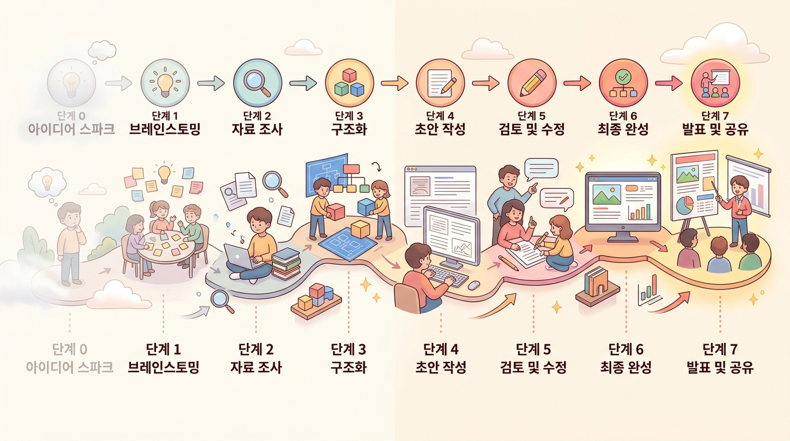

Step 7 · 배포 & 그 너머 — 교재 배포, 교재 DNA, 그리고 동료 리뷰¶
이 챕터에서 배울 것¶
- 완성된 교재를 MkDocs 웹사이트(URL 공유)와 DOCX 파일로 배포하는 방법을 실습합니다.
- 교재 DNA(제작 이력 추적)가 왜 중요한지 이해하고, 자신의 교재 DNA를 확인합니다.
- 크레딧 시스템의 7가지 기여자 역할을 구분하고, 자신의 교재에 적절한 크레딧을 설정합니다.
- 동료 리뷰를 요청하는 방법과 신뢰 배지(Beta → Verified)의 의미를 설명할 수 있습니다.
- 전체 8단계 워크플로우를 돌아보며 '교사의 직관 + AI의 생산성' 원칙을 자신의 언어로 정리합니다.
도입 — 서랍 속 교재의 운명¶
한 가지 장면을 떠올려 보겠습니다.
선생님이 주말 내내 공들여 만든 학습지가 있습니다. 직접 그림도 넣고, 예시도 다듬고, 문제도 세심하게 골랐습니다. 월요일 수업에서 학생들에게 나눠주었더니 반응이 좋습니다. 뿌듯합니다.
그런데 한 학기가 지나면 그 학습지는 어디에 있을까요?
컴퓨터 어딘가 폴더 안에, 혹은 USB 메모리 깊숙이. 옆 반 선생님이 "그 자료 좀 보내줄 수 있어?"라고 물어도 파일을 찾는 데 10분이 걸립니다. 다른 학교 선생님과 나누고 싶어도 마땅한 방법이 없습니다.
좋은 교재는 서랍 속에 잠들면 안 됩니다. 학생에게 쉽게 전달되고, 동료 교사와 자연스럽게 공유되고, 시간이 지나도 누가 어떻게 만들었는지 투명하게 기록되어야 합니다.
이번 챕터는 에듀플로의 마지막 단계, Step 7 · 배포입니다. 동시에 이 교재 전체의 마지막 챕터이기도 합니다. 지금까지 Step 0에서 프로젝트를 생성하고, Step 1에서 AI와 방향을 잡고, Step 2~3에서 목차를 다듬고, Step 4에서 본문을 만들고, Step 5에서 품질을 평가하고, Step 6에서 시각 요소를 입혔습니다. 이제 그 결과물을 세상에 내보낼 차례입니다.
본문¶
1. 배포 — 완성된 교재를 학생에게 전달하기¶
1-1. 두 가지 배포 방식¶
에듀플로에서 완성된 교재를 배포하는 방법은 크게 두 가지입니다.
① MkDocs 웹사이트 — URL 하나로 공유
MkDocs는 마크다운 문서를 깔끔한 웹사이트로 변환해주는 도구입니다. 에듀플로에서 "배포" 버튼을 누르면, 선생님의 교재가 자동으로 웹사이트가 됩니다. 학생에게 URL 하나만 보내면 됩니다.
웹사이트 배포의 장점을 정리하면 다음과 같습니다.
- 접근성: 학생이 스마트폰, 태블릿, PC 어디서든 열어볼 수 있습니다
- 실시간 업데이트: 교재를 수정하면 URL은 그대로인 채 내용만 바뀝니다
- 인터랙티브 요소 유지: Step 6에서 넣은 Mermaid 다이어그램, 코드 실행, 퀴즈가 모두 살아있습니다
- 검색 기능: 학생이 키워드로 원하는 내용을 찾을 수 있습니다
② DOCX 파일 — 익숙한 문서 형식
학교 환경에 따라 인쇄물이 필요하거나, 학교 학습관리시스템(LMS)에 파일을 올려야 하는 경우가 있습니다. DOCX로 다운로드하면 Microsoft Word나 한글(HWP) 호환 프로그램에서 열 수 있습니다.
💡 어떤 방식을 선택할까?
- 코드 실행이나 다이어그램이 많은 교재 → MkDocs 웹사이트 추천
- 인쇄해서 나눠줘야 하는 학습지 → DOCX 추천
- 두 가지를 동시에 배포해도 괜찍습니다. 상황에 따라 학생이 선택하게 할 수 있습니다
1-2. 실습 — 교재 배포하기¶
지금부터 직접 해보겠습니다. 이전 챕터들에서 만들어 온 '나만의 교재 1종'을 배포합니다.
MkDocs 웹사이트 배포 순서:
| 순서 | 할 일 | 확인 |
|---|---|---|
| 1 | 에듀플로에서 내 프로젝트를 엽니다 | ☐ |
| 2 | 상단 메뉴에서 "배포" 탭을 클릭합니다 | ☐ |
| 3 | "MkDocs 웹사이트 생성" 버튼을 누릅니다 | ☐ |
| 4 | 템플릿 테마가 자동 적용된 미리보기를 확인합니다 | ☐ |
| 5 | "배포하기"를 클릭하면 URL이 생성됩니다 | ☐ |
| 6 | 생성된 URL을 복사하여 브라우저에서 열어봅니다 | ☐ |
DOCX 다운로드 순서:
| 순서 | 할 일 | 확인 |
|---|---|---|
| 1 | 같은 "배포" 탭에서 "DOCX 다운로드" 버튼을 클릭합니다 | ☐ |
| 2 | 파일이 다운로드되면 Word 등으로 열어 확인합니다 | ☐ |
| 3 | 목차, 이미지, 표가 정상적으로 표시되는지 점검합니다 | ☐ |
⚠️ 주의! DOCX에서는 인터랙티브 요소(코드 실행, 퀴즈 등)가 정적 이미지나 텍스트로 변환됩니다. 인터랙티브가 핵심인 교재라면 MkDocs 웹사이트를 기본으로 사용하세요.
2. 교재 DNA — 제작 이력이 남긴 투명한 기록¶
2-1. 교재 DNA란 무엇인가¶
비유부터 시작하겠습니다. 사람의 DNA에 유전 정보가 담겨 있듯이, 교재 DNA에는 그 교재가 어떻게 만들어졌는지의 전체 이력이 담겨 있습니다.
에듀플로는 교재가 만들어지는 전 과정을 이벤트로 자동 기록합니다. 선생님이 따로 기록할 필요가 없습니다. 프로젝트를 생성한 순간부터 배포하는 순간까지, 모든 결정과 변경이 타임라인처럼 쌓입니다.
교재 DNA에 기록되는 정보는 다음과 같습니다.
- 누가, 언제, 어떤 결정을 내렸는지 — "2025년 3월 15일, 김○○ 교사가 3장의 순서를 변경"
- AI가 어떤 모델로, 몇 번 생성했는지 — "Claude 3.5로 초안 생성, 2회 재생성"
- 교사가 어디서 방향을 바꿨는지 — "Step 4에서 '실험 중심으로 바꿔줘' 지시"
- 평가 점수가 어떻게 향상되었는지 — "가독성 62점 → 85점 (3회 개선)"
- 동료 교사가 어떤 리뷰를 했는지 — "박○○ 교사: 교과 감수 통과"
2-2. 왜 교재 DNA가 중요한가¶
"그냥 교재만 잘 만들면 되는 거 아닌가요?"라고 생각하실 수 있습니다. 교재 DNA가 중요한 이유는 세 가지입니다.
첫째, 신뢰성입니다. AI 시대에 "이 교재를 믿을 수 있는가?"는 중요한 질문입니다. 교재 DNA를 보면, AI가 자동으로 만든 것인지 교사가 꼼꼼히 검토하고 수정한 것인지 즉시 알 수 있습니다. 교사의 개입 횟수, 수정 범위, 전문가 리뷰 여부가 모두 투명하게 드러납니다.
둘째, 증거 자료입니다. 교사가 승진 평가나 연수에서 "제가 이런 교재를 만들었습니다"라고 말할 때, 교재 DNA는 제작 과정 전체를 증명하는 공식 기록이 됩니다. 단순히 완성된 파일만 제출하는 것과, 기획부터 배포까지의 전 과정을 보여주는 것은 완전히 다른 무게를 가집니다.
셋째, 지속적 개선입니다. 다음 학기에 같은 교재를 업데이트할 때, DNA를 보면 "지난번에 3장을 세 번이나 재생성했었구나. 이 부분이 어려웠던 거지"라는 판단이 가능합니다. 시행착오의 기록이 다음 교재의 밑거름이 됩니다.
💡 에듀플로 헌법 제12조 — 과정 투명성
"모든 제작 과정을 기록하고 추적한다." 교재 DNA는 이 원칙을 기술적으로 구현한 것입니다. 선생님이 별도로 무언가를 기록할 필요 없이, 에듀플로가 자동으로 모든 이벤트를 저장합니다.
3. 크레딧 시스템 — 기여를 정확히 인정하는 7가지 역할¶
3-1. 왜 크레딧이 필요한가¶
논문에 저자 목록이 있듯이, 교재에도 "누가 어떤 역할을 했는가"를 명확히 기록해야 합니다. 특히 AI와 함께 만드는 교재에서는 이 구분이 더욱 중요합니다.
에듀플로의 크레딧 시스템은 7가지 기여자 역할을 정의합니다. 각 역할은 교재 제작에서 서로 다른 전문성을 나타냅니다.
3-2. 7가지 기여자 역할¶
| 역할 | 아이콘 | 하는 일 | 예시 |
|---|---|---|---|
| 저자 | ✏️ | 교재를 직접 기획하고 생성한 교사 | "이 교재의 전체 구조를 잡고, AI와 대화하며 본문을 만들었습니다" |
| 수업 설계 검토자 | 🎓 | 수업 설계의 적절성을 검토 | "도입-전개-정리 흐름이 자연스러운지, 학습 목표와 활동이 일치하는지 확인했습니다" |
| 교과 전문가 | 🔬 | 교과 내용의 정확성을 감수 | "물리 개념 설명에 오류가 없는지, 최신 학술 내용과 맞는지 검증했습니다" |
| 현장 적용자 | 🏫 | 실제 수업에서 교재를 사용하고 피드백 | "우리 반 학생들과 이 교재로 수업한 뒤, 학생 반응을 정리해 전달했습니다" |
| 편집자 | 📝 | 문장 교정과 일관성 확인 | "맞춤법, 존칭 통일, 용어 일관성을 점검했습니다" |
| 원작자 | 🌱 | 포크/리믹스된 원본 교재의 저자 | "이 교재는 박○○ 선생님의 교재를 기반으로 수정·확장했습니다" |
| AI 어시스턴트 | 🤖 | 콘텐츠 생성을 담당한 AI 모델 | "Claude 3.5가 초안 생성과 평가를 수행했습니다" |
3-3. 크레딧이 말해주는 것¶
크레딧 목록을 보면 그 교재의 성격이 바로 드러납니다. 예를 들어보겠습니다.
교재 A의 크레딧:
✏️ 저자: 김영희 | 🤖 AI: Claude 3.5
이 교재는 한 명의 교사가 AI와 함께 만든 것입니다. 별도의 검토 과정은 거치지 않았습니다.
교재 B의 크레딧:
✏️ 저자: 김영희 | 🔬 교과 전문가: 박철수 | 🏫 현장 적용자: 이민지 | 📝 편집자: 정수현 | 🤖 AI: Claude 3.5
이 교재는 기획자 외에 세 명의 전문가가 각각 다른 관점에서 검토했습니다. 교과 내용의 정확성, 실제 수업 적합성, 문장의 완성도가 모두 점검된 것입니다.
어떤 교재를 더 신뢰하시겠습니까? 크레딧 시스템은 이 차이를 투명하게 보여줍니다.
4. 동료 리뷰와 신뢰 배지¶
4-1. 동료 리뷰 — 교사가 교사를 검증한다¶
아무리 꼼꼼히 만든 교재라도 만든 사람의 눈에는 보이지 않는 부분이 있습니다. 이것은 능력의 문제가 아닙니다. 자기가 쓴 글의 오류를 자기가 발견하기 어려운 것은 자연스러운 일입니다.
에듀플로의 동료 리뷰는 교사가 다른 교사에게 검토를 요청하는 시스템입니다. 리뷰는 네 가지 유형으로 나뉩니다.
네 가지를 모두 받을 필요는 없습니다. 교재의 성격과 상황에 따라 필요한 리뷰만 선택하면 됩니다. 예를 들어, 과학 교재라면 교과 감수가 특히 중요할 것이고, 처음 만들어보는 형태의 교재라면 수업 설계 검토가 도움이 될 것입니다.
4-2. 신뢰 배지 — Beta에서 Verified로¶
동료 리뷰의 결과는 신뢰 배지로 표시됩니다. 배지는 두 단계입니다.
| 배지 | 의미 | 표시 |
|---|---|---|
| Beta | 아직 동료 리뷰를 받지 않은 상태 | 교재가 완성되었지만, 외부 검증을 거치지 않았습니다 |
| Verified | 동료 교사의 검토를 통과한 상태 | 최소 한 명 이상의 동료 교사가 검토하고 승인했습니다 |
Beta 배지가 나쁜 것은 아닙니다. 모든 교재는 Beta로 시작합니다. 다만, Verified 배지가 붙은 교재는 "다른 전문가의 눈도 거쳤다"는 추가적인 신뢰를 제공합니다.
이것은 학술 논문의 피어 리뷰(peer review) 시스템과 같은 원리입니다. 혼자 쓴 논문보다 동료 학자의 검토를 거친 논문이 더 신뢰받는 것처럼, 동료 교사의 검토를 거친 교재가 더 신뢰받는 것은 자연스러운 일입니다.
💡 에듀플로 헌법 제11조 — 공유와 진화
"완성된 교재는 공유되어 더 좋아진다." 동료 리뷰는 단순히 오류를 잡는 것이 아닙니다. 다른 교사의 관점이 더해져 교재가 한 단계 진화하는 과정입니다.
5. 전체 워크플로우 돌아보기 — 안개에서 완성까지¶
이제 Step 0부터 Step 7까지, 우리가 함께 걸어온 전체 여정을 한눈에 돌아보겠습니다.
각 단계에서 무엇이 일어났는지 정리합니다.
| 단계 | 교사가 한 일 | AI가 한 일 | 만들어진 결과물 |
|---|---|---|---|
| Step 0 | 교재 정보 입력, 템플릿 선택 | — | 프로젝트 설정 |
| Step 1 | 교재의 목적·대상·특징을 대화로 설명 | 질문을 던지며 암묵적 지식을 끌어냄 | 마스터 컨텍스트(방향 문서) |
| Step 2 | 목차 초안을 검토하고 수정 | Part > Chapter 구조의 목차 생성 | 교재 목차 |
| Step 3 | 챕터별 강조점·어려운 부분 피드백 | 피드백을 반영하여 목차 개선 | 확정된 목차 |
| Step 4 | 실시간 개입(일시정지·방향 전환) | 본문 텍스트 생성 | 교재 본문 초안 |
| Step 5 | 평가 결과 확인, 목표 점수 설정 | 가독성·인지부하·동기부여·정확성 분석 | 품질 보고서 + 개선된 본문 |
| Step 6 | 시각 요소 배치 검토 | 다이어그램·이미지·퀴즈·코드 생성 | 인터랙티브가 포함된 교재 |
| Step 7 | 배포 방식 선택, 크레딧 설정, 리뷰 요청 | 웹사이트 빌드, DOCX 변환 | 학생에게 전달되는 최종 교재 |
이 표에서 한 가지 패턴이 보이시나요? 모든 단계에서 교사가 결정하고, AI가 실행합니다. 이것이 에듀플로 헌법 제1조, "교사는 창작자, AI는 도구"의 구체적인 모습입니다.

6. '교사의 직관 + AI의 생산성' — 이 원칙을 다시 생각하다¶
1장에서 우리는 "교사는 창작자, AI는 도구"라는 협업 모델을 처음 만났습니다. 이제 전체 과정을 경험한 뒤, 이 원칙을 더 깊이 이해할 수 있습니다.
교사의 직관이란 무엇이었나요?
- "우리 반 학생들은 이 부분에서 헷갈려한다"는 경험적 판단
- "이 순서로 설명하면 더 잘 이해할 것이다"는 교수법적 감각
- "이 예시는 학생들의 일상과 가까워서 효과적일 것이다"는 맥락 지식
- "여기서 잠깐 멈추고 질문을 던져야 한다"는 수업 운영 노하우
이런 것들은 AI가 스스로 만들어낼 수 없습니다. 수년간 학생들과 함께 호흡하며 쌓아온 선생님만의 전문성입니다.
AI의 생산성이란 무엇이었나요?
- 방향만 알려주면 몇 분 만에 목차 초안을 만들어주는 속도
- 수천 자의 본문을 일관된 톤으로 생성하는 효율
- 가독성·인지 부하 같은 품질 지표를 자동으로 분석하는 정밀함
- 다이어그램과 이미지를 학습 흐름에 맞게 배치하는 체계성
이 둘이 합쳐졌을 때, 혼자서는 토요일 내내 걸리던 작업이 몇 시간으로 줄어듭니다. 그리고 줄어든 시간은 더 중요한 곳에 쓸 수 있습니다. 예를 들면, 교재를 실제로 수업에 적용한 뒤 학생 반응을 관찰하고 개선하는 일 같은 것입니다.
실습 — 나의 교재를 동료에게 공유·발표하기¶
이번 실습은 이 교재 전체의 마무리 활동입니다. Step 0부터 Step 7까지 거쳐 완성한 '나만의 교재 1종'을 동료 교사에게 공유하고 발표합니다.
실습 1: 배포 및 크레딧 설정¶
- 교재를 MkDocs 웹사이트로 배포하세요. 생성된 URL을 메모합니다.
- DOCX 파일도 다운로드하세요. 두 가지 형태를 비교해봅니다.
- 크레딧을 설정하세요. 최소한 다음 두 가지는 기록합니다.
- ✏️ 저자: 선생님의 이름
- 🤖 AI 어시스턴트: 사용한 AI 모델명
실습 2: 교재 DNA 확인¶
- 에듀플로에서 자신의 프로젝트의 교재 DNA(제작 이력)를 열어보세요.
- 다음 질문에 답해봅니다.
- AI가 총 몇 번 콘텐츠를 생성했나요?
- 내가 방향을 바꾼 곳은 어디인가요?
- Step 5 교육 평가에서 가장 많이 개선된 항목은 무엇인가요?
실습 3: 동료 발표 및 리뷰 교환¶
- 옆 자리 동료 교사와 교재 URL을 교환합니다.
- 상대방의 교재를 5분간 살펴본 뒤, 다음 관점에서 한 줄 피드백을 작성합니다.
- 🎓 수업 설계: 학습 흐름이 자연스러운가?
- 🔬 교과 내용: 설명이 정확한가?
- 🏫 현장 적용: 실제 수업에서 바로 쓸 수 있을까?
- 3분간 자신의 교재를 발표합니다. 다음 내용을 포함하세요.
- 이 교재의 대상과 목적
- 제작 과정에서 가장 어려웠던 순간
- AI와 협업하면서 가장 유용했던 기능
정리¶
핵심 요약¶
-
배포는 두 가지 방식으로 가능합니다. MkDocs 웹사이트(URL 공유, 인터랙티브 유지)와 DOCX 파일(인쇄·오프라인 전달). 교재의 성격과 학교 환경에 따라 선택합니다.
-
교재 DNA는 제작 과정의 투명한 기록입니다. 누가 어떤 결정을 했는지, AI가 몇 번 생성했는지, 어디서 방향을 바꿨는지가 자동으로 저장됩니다. 교재의 신뢰성을 높이고, 교사의 전문성을 증명합니다.
-
크레딧 시스템은 7가지 기여자 역할을 구분합니다. 저자, 수업 설계 검토자, 교과 전문가, 현장 적용자, 편집자, 원작자, AI 어시스턴트. 누가 어떤 전문성을 발휘했는지를 투명하게 보여줍니다.
-
동료 리뷰와 신뢰 배지는 교재의 품질을 한 단계 높입니다. Beta(리뷰 전) → Verified(검토 통과). 다른 교사의 관점이 더해져 교재가 진화합니다.
-
전체 여정의 핵심은 하나입니다. 교사의 직관이 방향을 잡고, AI의 생산성이 속도를 높입니다. 이 협업에서 결정권은 언제나 교사에게 있습니다.
성찰 — 나의 교재 제작 여정을 돌아보며¶
잠시 멈추고, 이 교재 전체를 통해 걸어온 길을 되돌아보겠습니다. 다음 질문에 자신만의 답을 적어보세요.
🪞 성찰 질문
- Step 0에서 처음 프로젝트를 만들었을 때의 막막함과, 지금 완성된 교재를 보는 느낌은 어떻게 다른가요?
- AI와 함께 작업하면서 "이건 AI가 잘하는구나"라고 느낀 순간은 언제였나요? 반대로 "이건 결국 내가 판단해야 하는구나"라고 느낀 순간은 언제였나요?
- 이번에 만든 교재를 다음 학기에 실제 수업에서 사용한다면, 어떤 부분을 가장 먼저 수정하고 싶나요?
- 동료 교사에게 에듀플로를 한 문장으로 소개한다면, 어떻게 말하겠습니까?
이 교재를 넘어서¶
배포 버튼을 누르는 순간, 선생님의 교재는 서랍 속 파일이 아니라 학생에게 닿는 교육 콘텐츠가 됩니다. 그리고 에듀플로 헌법 제11조가 말하듯, "완성된 교재는 공유되어 더 좋아진다"는 것을 기억해 주세요.
선생님이 만든 교재는 다른 학교의 동료 교사에게 영감을 줄 수 있습니다. 그 교사가 선생님의 교재를 기반으로 자기 학생에 맞게 수정하면, 원작자(🌱)로서 선생님의 이름이 크레딧에 남습니다. 교재는 한 사람의 작품으로 끝나지 않고, 교사 공동체 안에서 계속 성장합니다.
확인 문제¶
스스로 점검해 봅니다. 답을 떠올린 뒤 아래의 해설을 확인하세요.
문제 1. MkDocs 웹사이트 배포와 DOCX 다운로드의 가장 큰 차이점은 무엇인가요?
해설 보기
MkDocs 웹사이트는 인터랙티브 요소(코드 실행, 퀴즈, Mermaid 다이어그램 등)가 살아있는 상태로 URL 하나로 공유됩니다. DOCX는 인쇄와 오프라인 전달에 적합하지만, 인터랙티브 요소가 정적 이미지나 텍스트로 변환됩니다.문제 2. 교재 DNA에 기록되는 정보를 세 가지 이상 말해보세요.
해설 보기
① 누가, 언제, 어떤 결정을 내렸는지 ② AI가 어떤 모델로 몇 번 생성했는지 ③ 교사가 어디서 방향을 바꿨는지 ④ 평가 점수가 어떻게 향상되었는지 ⑤ 동료 교사가 어떤 리뷰를 했는지문제 3. 크레딧 시스템에서 '현장 적용자(🏫)'의 역할은 무엇인가요?
해설 보기
현장 적용자는 실제 수업에서 해당 교재를 사용하고, 학생 반응과 개선점을 피드백하는 역할입니다. 교재가 이론적으로 좋은 것과 실제 교실에서 효과적인 것은 다를 수 있기 때문에, 현장 적용자의 피드백은 교재의 실용성을 높이는 데 핵심적입니다.문제 4. 신뢰 배지 'Beta'와 'Verified'의 차이를 설명해보세요.
해설 보기
Beta는 동료 리뷰를 받기 전 상태로, 교재가 완성되었지만 외부 검증을 거치지 않았습니다. Verified는 최소 한 명 이상의 동료 교사가 검토하고 승인한 상태입니다. Beta가 나쁜 것은 아니지만, Verified는 추가적인 신뢰를 제공합니다.문제 5. "교사의 직관 + AI의 생산성"이라는 원칙에서, 교사의 직관에 해당하는 것을 두 가지, AI의 생산성에 해당하는 것을 두 가지 말해보세요.
해설 보기
**교사의 직관**: ① 학생들이 어떤 부분에서 어려워하는지 아는 경험적 판단 ② 어떤 순서로 설명하면 효과적인지에 대한 교수법적 감각 **AI의 생산성**: ① 방향이 정해지면 빠르게 목차와 본문 초안을 생성하는 속도 ② 가독성·인지 부하 같은 품질 지표를 자동으로 분석하는 정밀함🎉 축하합니다! 이 챕터를 마지막으로, 에듀플로의 전체 워크플로우를 모두 경험했습니다. 선생님은 이제 아이디어 단계에서 배포까지, AI와 함께 교재를 만드는 전 과정을 직접 해본 사람입니다. 첫 교재는 시작일 뿐입니다. 실제 수업에서 사용하고, 학생 반응을 관찰하고, 다시 다듬어 보세요. 교재는 한 번 완성으로 끝나는 것이 아니라, 수업과 함께 계속 진화하는 살아있는 문서입니다.